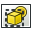

L'atelier Mise en plan vous permet de mettre votre travail 3D sur papier. C'est-à-dire, mettre des vues de vos modèles dans une fenêtre 2D et insérer cette fenêtre dans un dessin, par exemple une feuille avec une bordure, un titre et votre logo et enfin imprimer cette feuille.
Contents
Outils graphiques
Ces outils permettent de créer, configurer et exporter des mises en plan 2D
-
 Ouvrir un fichier vectoriel SVG: Ouvre une feuille de dessin précédemment sauvegardée au format de fichier SVG
Ouvrir un fichier vectoriel SVG: Ouvre une feuille de dessin précédemment sauvegardée au format de fichier SVG
-
 Nouvelle feuille A3 paysage: Créé une nouvelle feuille à partir du gabarit A3 par défaut de FreeCAD
Nouvelle feuille A3 paysage: Créé une nouvelle feuille à partir du gabarit A3 par défaut de FreeCAD
-  Insérer une vue: Insère une vue de l'objet sélectionné dans la feuille active
{kind=link}
-
 Annotation: Ajoute une annotation dans la feuille de dessin courante.
Annotation: Ajoute une annotation dans la feuille de dessin courante.
-
 Clip: Ajoute un groupe de clip dans la feuille de dessin courante
Clip: Ajoute un groupe de clip dans la feuille de dessin courante
-
 Ouverture du navigateur internet: Ouvre un aperçu de la feuille courante dans le navigateur.
Ouverture du navigateur internet: Ouvre un aperçu de la feuille courante dans le navigateur.
-
 Vue Orthogonale: Crée automatiquement des vues orthogonales d'un objet sur la feuille de dessin courante.
Vue Orthogonale: Crée automatiquement des vues orthogonales d'un objet sur la feuille de dessin courante.
-
 Symbol: Ajoute le contenu d'un fichier SVG en tant que symbole dans la feuille de dessin en cours.
Symbol: Ajoute le contenu d'un fichier SVG en tant que symbole dans la feuille de dessin en cours.
-
 Draft View: Insère une vue Brouillon spécial de l'objet sélectionné dans la feuille de dessin en cours.
Draft View: Insère une vue Brouillon spécial de l'objet sélectionné dans la feuille de dessin en cours.
-
 Spreadsheet View: Insère une vue d'une feuille de calcul sélectionnée dans la feuille de dessin en cours.
Spreadsheet View: Insère une vue d'une feuille de calcul sélectionnée dans la feuille de dessin en cours.
-
 Exporter la feuille: Exporte la feuille dans un fichier au format SVG
Exporter la feuille: Exporte la feuille dans un fichier au format SVG
- Project Shape: Crée une projection de l'objet sélectionné (Source) dans la vue 3D.
L'atelier Draft a son propre atelier de dessin qui place les objets du projet sur papier. Il a quelques fonctionnalités supplémentaires sur les outils de dessin standards et prend en charge les objets spécifiques tels que les dimensions.

La capture d'écran ci-dessus montre les concepts principaux de l'atelier de Mise en plan. Le document contient un objet (Schenkel) que nous voulons extraire dans une mise en plan. Une « Page » est donc créée. Une page est générée depuis un gabarit, dans ce cas le gabarit « A3_Landscape ». Ce gabarit est un document SVG qui peut contenir un cadre de page, un cartouche avec votre logo se conformant à vos normes.
Dans cette page peuvent être insérées une ou plusieurs vues. Chaque vue a une position sur la page (Propriétés X,Y), une échelle (Propriété d'échelle) et des propriétés additionnelles. Chaque fois que la page, la vue ou l'objet référencé subit une modification, la page est regénérée et l'affichage mis à jour.
Script
Pour l'instant la méthodologie de travail par l'interface graphique est sévèrement limitée, l'API de script est plus intéressante. Voici quelques exemples démontrant l'utilisation de l'API de script dans l'atelier de mise en plan.
Ici un script qui permet de remplir facilement le cartouche de la feuille originele A3_Landscape de FreeCAD.
Exemples simples
Vous devez en premier lieu charger les modules Pièce (Part) et Mise en plan (Drawing) :
import FreeCAD, Part, Drawing
Créez une petite pièce
Part.show(Part.makeBox(100,100,100).cut(Part.makeCylinder(80,100)).cut(Part.makeBox(90,40,100)).cut(Part.makeBox(20,85,100)))
Projection directe. G0 veut dire arête vive, G1 est une tangente continue.
Shape = App.ActiveDocument.Shape.Shape [visibleG0,visibleG1,hiddenG0,hiddenG1] = Drawing.project(Shape) print "visible edges:", len(visibleG0.Edges) print "hidden edges:", len(hiddenG0.Edges)
Tout est projeté sur le plan Z :
print "Bnd Box shape: X=",Shape.BoundBox.XLength," Y=",Shape.BoundBox.YLength," Z=",Shape.BoundBox.ZLength print "Bnd Box project: X=",visibleG0.BoundBox.XLength," Y=",visibleG0.BoundBox.YLength," Z=",visibleG0.BoundBox.ZLength
Un autre vecteur de projection
[visibleG0,visibleG1,hiddenG0,hiddenG1] = Drawing.project(Shape,App.Vector(1,1,1))
Projeter en format SVG
resultSVG = Drawing.projectToSVG(Shape,App.Vector(1,1,1)) print resultSVG
La méthode paramétrique
Créer le corps
import FreeCAD
import Part
import Drawing
# Create three boxes and a cylinder
App.ActiveDocument.addObject("Part::Box","Box")
App.ActiveDocument.Box.Length=100.00
App.ActiveDocument.Box.Width=100.00
App.ActiveDocument.Box.Height=100.00
App.ActiveDocument.addObject("Part::Box","Box1")
App.ActiveDocument.Box1.Length=90.00
App.ActiveDocument.Box1.Width=40.00
App.ActiveDocument.Box1.Height=100.00
App.ActiveDocument.addObject("Part::Box","Box2")
App.ActiveDocument.Box2.Length=20.00
App.ActiveDocument.Box2.Width=85.00
App.ActiveDocument.Box2.Height=100.00
App.ActiveDocument.addObject("Part::Cylinder","Cylinder")
App.ActiveDocument.Cylinder.Radius=80.00
App.ActiveDocument.Cylinder.Height=100.00
App.ActiveDocument.Cylinder.Angle=360.00
# Fuse two boxes and the cylinder
App.ActiveDocument.addObject("Part::Fuse","Fusion")
App.ActiveDocument.Fusion.Base = App.ActiveDocument.Cylinder
App.ActiveDocument.Fusion.Tool = App.ActiveDocument.Box1
App.ActiveDocument.addObject("Part::Fuse","Fusion1")
App.ActiveDocument.Fusion1.Base = App.ActiveDocument.Box2
App.ActiveDocument.Fusion1.Tool = App.ActiveDocument.Fusion
# Cut the fused shapes from the first box
App.ActiveDocument.addObject("Part::Cut","Shape")
App.ActiveDocument.Shape.Base = App.ActiveDocument.Box
App.ActiveDocument.Shape.Tool = App.ActiveDocument.Fusion1
# Hide all the intermediate shapes
Gui.ActiveDocument.Box.Visibility=False
Gui.ActiveDocument.Box1.Visibility=False
Gui.ActiveDocument.Box2.Visibility=False
Gui.ActiveDocument.Cylinder.Visibility=False
Gui.ActiveDocument.Fusion.Visibility=False
Gui.ActiveDocument.Fusion1.Visibility=False
Insérer un objet Page et assigner un modèle
App.ActiveDocument.addObject('Drawing::FeaturePage','Page')
App.ActiveDocument.Page.Template = App.getResourceDir()+'Mod/Drawing/Templates/A3_Landscape.svg'
Créer une vue de votre objet "Shape", définir la position et l'assigner à la page
App.ActiveDocument.addObject('Drawing::FeatureViewPart','View')
App.ActiveDocument.View.Source = App.ActiveDocument.Shape
App.ActiveDocument.View.Direction = (0.0,0.0,1.0)
App.ActiveDocument.View.X = 10.0
App.ActiveDocument.View.Y = 10.0
App.ActiveDocument.Page.addObject(App.ActiveDocument.View)
Créer une seconde vue de l'objet, le but ici est de faire une rotation de 90 degrés
App.ActiveDocument.addObject('Drawing::FeatureViewPart','ViewRot')
App.ActiveDocument.ViewRot.Source = App.ActiveDocument.Shape
App.ActiveDocument.ViewRot.Direction = (0.0,0.0,1.0)
App.ActiveDocument.ViewRot.X = 290.0
App.ActiveDocument.ViewRot.Y = 30.0
App.ActiveDocument.ViewRot.Scale = 1.0
App.ActiveDocument.ViewRot.Rotation = 90.0
App.ActiveDocument.Page.addObject(App.ActiveDocument.ViewRot)
Créer une troisième vue de votre objet ici une vue isométrique. Nous activons "hidden lines" pour les rendre invisibles.
App.ActiveDocument.addObject('Drawing::FeatureViewPart','ViewIso')
App.ActiveDocument.ViewIso.Source = App.ActiveDocument.Shape
App.ActiveDocument.ViewIso.Direction = (1.0,1.0,1.0)
App.ActiveDocument.ViewIso.X = 335.0
App.ActiveDocument.ViewIso.Y = 140.0
App.ActiveDocument.ViewIso.ShowHiddenLines = True
App.ActiveDocument.Page.addObject(App.ActiveDocument.ViewIso)
Changements et mise à jour. La mise à jour modifie les vues et la page.
App.ActiveDocument.View.X = 30.0 App.ActiveDocument.View.Y = 30.0 App.ActiveDocument.View.Scale = 1.5 App.ActiveDocument.recompute()
Accéder aux objets et détails
Obtenir des fragments SVG d'une vue
ViewSVG = App.ActiveDocument.View.ViewResult print ViewSVG
Obtenir toute la page (dans un fichier et dans le répertoire temporaire avec uniquement le droit en lecture)
print "Resulting SVG document: ",App.ActiveDocument.Page.PageResult file = open(App.ActiveDocument.Page.PageResult,"r") print "Result page is ",len(file.readlines())," lines long"
Important : libérer le fichier !
del file
Insérer une vue avec votre propre contenu :
App.ActiveDocument.addObject('Drawing::FeatureView','ViewSelf')
App.ActiveDocument.ViewSelf.ViewResult = """<g id="ViewSelf"
stroke="rgb(0, 0, 0)"
stroke-width="0.35"
stroke-linecap="butt"
stroke-linejoin="miter"
transform="translate(30,30)"
fill="#00cc00"
>
<ellipse cx="40" cy="40" rx="30" ry="15"/>
</g>"""
App.ActiveDocument.Page.addObject(App.ActiveDocument.ViewSelf)
App.ActiveDocument.recompute()
del ViewSVG
Ce qui donne le résultat suivant :

Généralité sur les Dimensions et les Tolérances
Dessiner les dimensions et les tolérances est encore en cours de développement, mais vous pouvez accéder à des fonctionnalités de base avec un peu de travail.
Tout d'abord vous avez besoin d'obtenir le module Python gdtsvg (attention : le lien pourrait être rompu à tout moment!) :
Pour obtenir un cadre de contrôle de cette fonctionnalité, essayez ce qui suit :
import gdtsvg as g # Import the module, I like to give it an easy handle
ourFrame = g.ControlFrame("0","0", g.Perpendicularity(), ".5", g.Diameter(), g.ModifyingSymbols("M"), "A",
g.ModifyingSymbols("F"), "B", g.ModifyingSymbols("L"), "C", g.ModifyingSymbols("I"))
Voici une bonne répartition du contenu d'un cadre de contrôle : http://www.cadblog.net/adding-geometric-tolerances.htm
Les paramètres à passer dans la fenêtre :
- X-coordonnée, coordonnées dans le system-SVG (type string)
- Y-coordinate, coordonnées dans le system-SVG (type string)
- Le symbole des caractéristiques géométriques souhaitée (un tuple), (en premier la chaîne, en deuxième, la largeur du symbole, en troisième, la hauteur du symbole)
- La tolerance (type string)
- (optionel) Le diametre du symbole (tuple, en premier la chaîne Svg, en deuxième, la largeur du symbole, en troisième, la hauteur du symbole)
- (optionel) Les conditions de modifications matérielles (tuple, en premier, la chaîne Svg, en deuxième, la largeur du symbole, en troisième, la hauteur du symbole)
- (optionel) La première, la donnée (type string)
- (optionel) La première, modification de la donnée (tuple, en premier, la chaîne Svg, en deuxième, la largeur du symbole, en troisième, la hauteur du symbole)
- (optionel) La seconde donnée (type string)
- (optionel) Conditions de modification de la seconde donnée (tuple, en premier, la chaîne Svg, en deuxième, la largeur du symbole, en troisième, la hauteur du symbole)
- (optionel) la troisième donnée (type string)
- (optionel) Conditions de modification de la troisième donnée (tuple, en premier, la chaîne Svg, en deuxième, la largeur du symbole, en troisième, la hauteur du symbole)
La fonction ControlFrame retourne un type contenant (la chaîne Svg, largeur hors tout de la fenêtre de contrôle, hauteur hors tout du cadre de la fenêtre de contrôle)
Pour obtenir une dimension, essayez ce qui suit :
import gdtsvg
ourDimension = linearDimension(point1, point2, textpoint, dimensiontext, linestyle=getStyle("visible"),
arrowstyle=getStyle("filled"), textstyle=getStyle("text")
Entrée des dimensions linéaires:
- point1, le tuple (x,y) avec les coordonnées svg, ceci est le premier point de la dimension
- point2, le tuple (x,y) avec les coordonnées svg, ceci est le deuxième point de la dimension
- textpoint, le tuple (x,y) des coordonnées svg, ceci est la position du texte de la dimension
- dimensiontext, la chaîne contenant le texte de la dimension
- linestyle, la chaîne svg contenant (i.e. css) contenant le styles, utilisez la fonction getStyle pour récupérer un paramètre défini pour la chaîne, pour donner un style à la chaîne
- arrowstyle, la chaîne svg contenant contenant le style (i.e. css), utilisez la fonction getStyle pour récupérer une chaîne prédéfinie, pour donner le style de flèche
- textstyle, la chaîne svg contenant contenant le style (i.e. css), utilisez la fonction getStyle pour récupérer une chaîne prédéfinie, pour donner le style du texte
Vous pouvez procéder comme ci-dessus pour afficher les dimensions sur la page de dessin. Ce module est très bogué, et, peut être rompu à tout moment, des rapports de bugs, sont les bienvenus sur la page github pour l'instant, ou contactez jcc242, sur les forums, si vous validez un bug, ou quelque chose d'autre.
Modèles
FreeCAD est livré avec un jeu de modèles par défaut, vous pouvez en trouver d'autres sur la page des Modèles de feuille.
Extension Module de dessin
Quelques notes sur le module de dessin sont ajoutés à la page Documentation sur le module dessin (en). Il aide à comprendre rapidement le fonctionne du module de dessin, ce qui permet aux programmeurs de commencer rapidement sa programmation.
Tutoriels
Liens externes